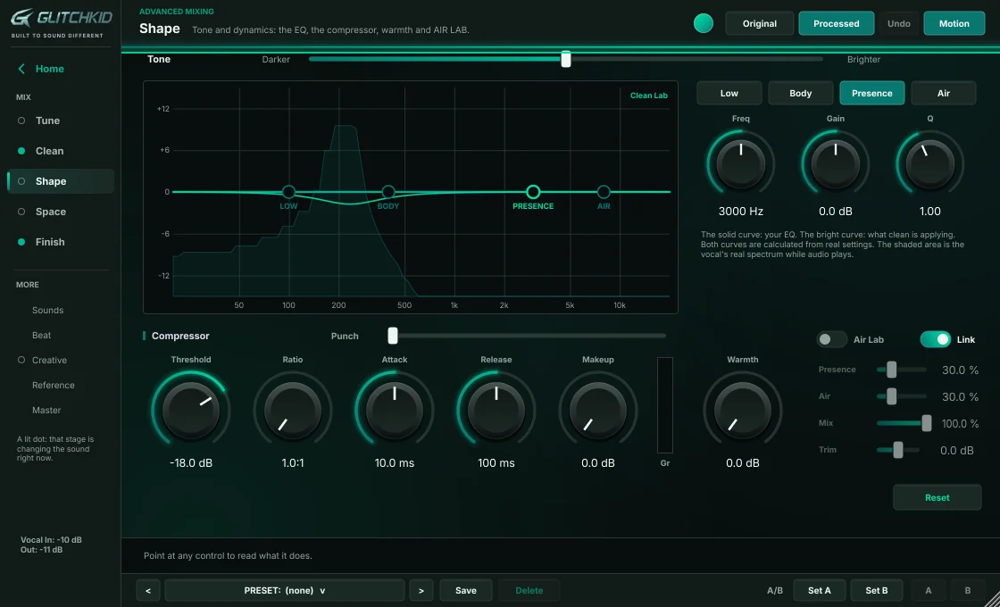
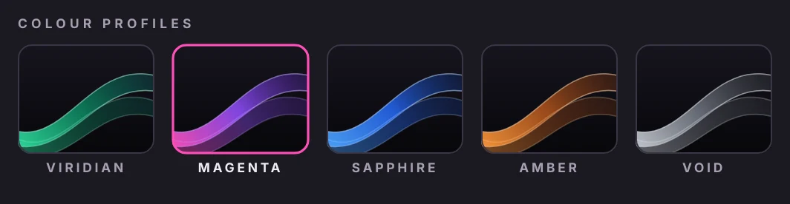

Build My Mix
Listens to 2–8 seconds of your vocal, then fits your chosen starting sound to what it heard. One Undo takes you back.


— Built to sound different
Professional vocal production. Less work. More music.
Signal study · animation, not live audio · VST3 · macOS (Apple Silicon)
01 · The instrument
Two workspaces, one engine. Home gets you a starting mix fast. Advanced Mixing opens every detail. Change a control in one and the other follows.

A · Home
B · Advanced Mixing
Five stages in the order a vocal is worked, each with its own workspace. Presets and A/B snapshots sit on every page.
Shape: tone, a draggable four-band EQ, the compressor with gain reduction, warmth and Air Lab.

Screens rendered from the current beta build of the plug-in.
02 · Hear it
The same take, before and after GlitchKid. Switch while it plays: the position stays where it is.
Demo recordings not published yet
We'll only publish a real vocal recorded with GlitchKid and its untouched original, never a mock-up. Until then, apply for the beta and hear it on your own voice.
03 · Four steps
Put GlitchKid on your vocal track and press play.
Pick one of eight starting sounds, from Clean & Natural to Hard-Tuned Rap.
Build My Mix listens to your vocal for a few seconds and fits the sound to it.
Shape it on Home, or go deep in Advanced Mixing. Compare with your original any time.
04 · Inside the instrument
Listens to 2–8 seconds of your vocal, then fits your chosen starting sound to what it heard. One Undo takes you back.
Clean & Natural · Modern Melodic Rap · Hard-Tuned Rap · Dark & Atmospheric · Bright & Present · Smooth R&B · Gritty Rap · Spacious Lead
Pitch correction toward the key and scale you choose. Natural, Light or Hard, plus strength and speed.
Measures your voice and treats rumble, low-mid build-up, harsh resonances and sharp S sounds, and shows you what it's cutting.
Presence and air that ease off on S sounds, so brightness never turns harsh.
Four main controls for the big moves. Each one drives the detailed settings underneath.
Send your beat to GlitchKid's instrumental input. Beat Lock compares it with your vocal and suggests small changes you review before applying.
Tempo-synced echo, stereo width and a synthetic double for space and size.
Catches peaks at the end of the chain and shows how much it's really reducing.
Hear your untouched vocal any time, and come back to GlitchKid in one click.
Save your own sounds. Keep two snapshots and switch between them.
Tune, Clean, Shape, Space, Finish: a draggable EQ, compressor with gain reduction, warmth and limiter controls.

05 · The facts
06 · Beta
We're inviting independent artists and vocal producers to experience GlitchKid and help shape its next chapter.
07 · Questions
A vocal-production plug-in for independent artists. Pick a starting sound, let it build a mix from your own vocal, then refine it, either with a few big controls or in full detail.
It's a VST3 plug-in. It's been tested in FL Studio 2025 on macOS. Other VST3 hosts are part of what the beta is for, so their status is awaiting confirmation.
Not in this beta: it runs on Apple Silicon Macs (macOS 12 or later). Tell us your setup in the application anyway.
Not in this beta. Space comes from a tempo-synced echo, stereo width and a doubler.
No. You choose the key and scale; AutoTune pulls your voice toward them.
Awaiting confirmation. We'll tell you before you commit to anything.
We use your application only to run the GlitchKid beta and contact you about it. Full privacy policy awaiting confirmation.